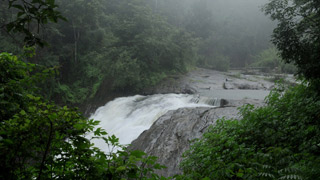

kanthanpara
kanthanpara
Kanthanpara is a quaint little waterfall in Wayanad, famous for its secluded and serene vibe. The cool, sparking waters at this lesser known destination is sure to soothe all who wish to rejuvenate in a silent environment. Surrounded by beautiful greenery on all sides, it is worth spending a day a picnicking in the calming embrace of nature.